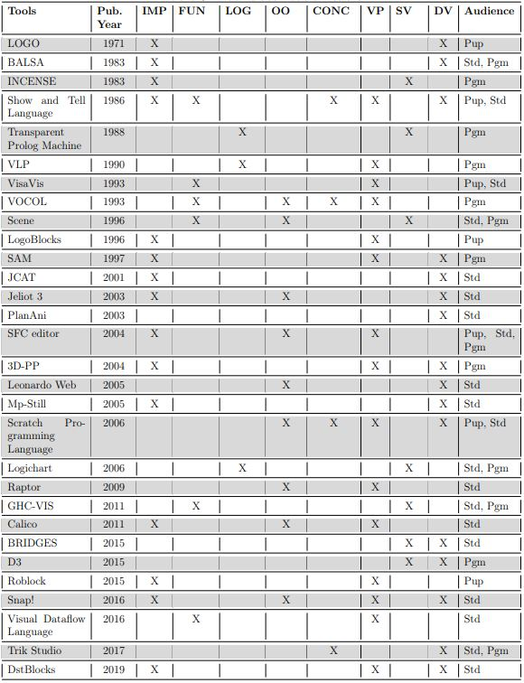
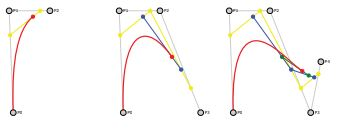

Université de Namur
Initiation à la démarche scientifique | IHDCB339
State of the art: A Systematic literature review on visual representation systems for programming paradigms
2019 - 2020
Authors

Thibault Six

Benjamin Jonard
Promoters

Pierre-Yves Schobbens
Moussa Amrani
Introduction
Programming paradigms
- Imperative
- λFunctional
- Logical
- Object oriented
- Concurrent
Imperative Programming
#include<stdio.h>
void quicksort(int number[],int first,int last) {
int i, j, pivot, temp;
if(first<last) {
pivot=first;
i=first;
j=last;
while(i<j) {
while(number[i]<=number[pivot]&&i<last)
i++;
while(number[j]>number[pivot])
j--;
if(i<j) {
temp=number[i]; number[i]=number[j]; number[j]=temp;
}
}
temp=number[pivot];
number[pivot]=number[j];
number[j]=temp;
quicksort(number,first,j-1);
quicksort(number,j+1,last);
}
}
int main() {
int number[] = {7, 4, 34, 0, 12};
int count=5;
quicksort(number,0,count-1);
return 0;
}
Functional Programming
let rec qsort list = match list with
[] | _::[] -> list
| pivot::residue ->
let start, end = List.partition (fun a -> a < pivot) residue in
qsort start @ [pivot] @ qsort end
Logical Programming
quicksort([X|Xs],Ys) :-
partition(Xs,X,Left,Right),
quicksort(Left,Ls),
quicksort(Right,Rs),
append(Ls,[X|Rs],Ys).
quicksort([],[]).
partition([X|Xs],Y,[X|Ls],Rs) :-
X <= Y, partition(Xs,Y,Ls,Rs).
partition([X|Xs],Y,Ls,[X|Rs]) :-
X > Y, partition(Xs,Y,Ls,Rs).
partition([],Y,[],[]).
append([],Ys,Ys).
append([X|Xs],Ys,[X|Zs]) :- append(Xs,Ys,Zs).
Object Oriented Programming
public class MyArray {
private int[] arr;
public MyArray(int[] arr) {
this.arr = arr;
}
public void sort() {
quickSort(0, arr.length-1);
}
private void quickSort(int begin, int end) {
if (begin < end) {
int partitionIndex = partition(begin, end);
quickSort(begin, partitionIndex-1);
quickSort(partitionIndex+1, end);
}
}
private int partition(int begin, int end) {
int pivot = arr[end];
int i = (begin-1);
for (int j = begin; j < end; j++) {
if (arr[j] <= pivot) {
i++;
swap(i, j);
}
}
swap(i+1, end);
return i+1;
}
private void swap(int firstIndex, int secondIndex) {
int swapTemp = arr[firstIndex];
arr[firstIndex] = arr[secondIndex];
arr[secondIndex] = swapTemp;
}
}
Concurrent Programming
func Cqsort(s []int) {
d := make(chan int)
go cqsort(s, d)
<-d
return
}
func cqsort(s []int, done chan int) {
// termination condition
if len(s) <= 1 {
done <- 1
return
}
// where the work happens
pivotIdx := partition(s)
// communication channel
childChan := make(chan int)
go cqsort(s[:pivotIdx+1], childChan)
go cqsort(s[pivotIdx+1:], childChan)
// block until both concurrent children finish
for i := 0; i < 2; i++ {
<-childChan
}
// tell our caller we are done
done <- 1
return
}
Programs representation systems
- Visual programming
- Static Visualisation
- Dynamic Visualisation
Visual Programming

Static Visualisation

Dynamic Visualisation

Methodology
Systematic litterature review (SLR)
- Research question
- Keywords
- Inclusion & Exclusion criteria
- Query search engines
- Back & forward tracking
- Articles relevance & classification
Custom bibliography management tool
Classification


Tools

Visual Programming
 (1996) LogoBlocks: A graphical programming language for interacting with the world
(1996) LogoBlocks: A graphical programming language for interacting with the world
Visual Programming
 (2006) The scratch programming language and environment
(2006) The scratch programming language and environment
Visual Programming
 (2016) Snap! (build your own blocks)
(2016) Snap! (build your own blocks)
Visual Programming
 (1996) The SFC editor a graphical tool for algorithm development
(1996) The SFC editor a graphical tool for algorithm development
Dynamic Visualization
 (2003) PlanAni: Program animation based on the roles of variables
(2003) PlanAni: Program animation based on the roles of variables
Dynamic Visualization
 (2003) Jeliot: Animation of user algorithms on the Web
(2003) Jeliot: Animation of user algorithms on the Web
Dynamic Visualization
 (2005) Visual editing of animated algorithms: the Leonardo Web builder
(2005) Visual editing of animated algorithms: the Leonardo Web builder
Dynamic Visualization

(2015) D3 Data-Driven Documents
Dynamic Visualization
 (2009) Raptor: A visual programming environment for teaching object-oriented programming
(2009) Raptor: A visual programming environment for teaching object-oriented programming
Static Visualization
 (1983) INCENSE: a system for displaying data structures
(1983) INCENSE: a system for displaying data structures
Timeline


Learnings
Programming paradigms
- Imperative most represented
- Object Oriented was trendy in the 90's
- Logical programming was trendy in the late 80's
Learnings
Program representation systems
- Static visual programs representations still studied today
- Performance concerns seem to be largely resolved since the 90's
- Visual programming has regain some interest lately
- Serious games are a relatively new trend
- Increasingly frequent use of web technologies
Future research areas
Programming paradigms
- Functional programming => data flow diagrams
- Logical programming => Decision trees
- Object-oriented => UML
- Think out of the box!
- Lack of multi-textual langages and multi-paradigm tools
Future research areas
Program representation systems
- Screen size is limited
- Still some performance concerns
- 3D representations
- Serious games
- Virtual Reality
Self-criticism
- Better research methodology
- Better keywords definition
- Expand to more programming paradigms
- Analyse more tools
Future works
- Better research methodology